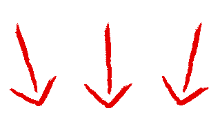

A Timely Solution is a grand project with which we work with many alternating classes such as cascading stylesheet, multimedia art collages, and the industrial revolution. It is a hands on experience in exploring the past, making media collages to represent them through poems, and making a website that proceeds to expand on the topics. To learn more about the mixed media collages and poems we did on the industrial revolution and on media to, please look into Noel's class for the following. If you would like to see what we did and learned in our interviews about our subject's life so far, please check Daramola's class for the following. Click on the following and labeled links below to navigate through topics on the following pages and to learn more about the topics and what we've done so far in the semester.
